HighMemo for iPhone and iPad
Every feature, where to find it, and what it needs before it works.
Current interface
HighMemo on iPhone, today
Search a growing library, open a memo with its context, and switch to a calendar view for reminders and connected events. The same screens are available in light and dark appearance.


Contents
- Before you start
- The home screen
- Writing a memo
- Sending things in from other apps
- The memo list, search and filters
- Opening a memo
- Tags, folders, pinning and people
- The graph view
- Documents
- AI Assistant
- Reminders
- Calendar
- Setting up AI
- The on-device search model
- Sync with your Google Drive
- Settings reference
- Export, import and reset
- Permissions and what leaves the device
- Troubleshooting
1. Before you start #
There is no sign-up, no onboarding and no API key to paste. Install HighMemo, open it, and start typing. Nothing is connected on a fresh install.
What works with nothing connected
- Writing, editing and deleting memos
- Attaching photos and files
- Tags, folders, pinning
- Searching and filtering
- Time and location reminders
- The graph view
- Export and import
What needs something connected first
| Feature | What it needs |
|---|---|
| Titles, summaries, tags and categories written for you | An AI provider — a cloud key you own, or a model on the device |
| AI Assistant | The same |
| Documents built from several memos | The same |
| Meaning-based search, and the Recommend list | The on-device search model (about 330 MB) |
| The same memos on your other devices | A Google account, connected in Settings |
| Your schedule beside your memos | Google Calendar, connected in Settings |
HighMemo shows ads. They appear as an occasional row inside the memo list — roughly one row per twenty memos. There is no paid version and no ad-free version, so there is no setting that turns them off. If you are in the EEA, the UK or Switzerland, a Google-certified consent form appears before any ad is loaded.
You will be asked about a download. A dialog titled Improve search quality? offers an optional on-device model of about 330 MB that powers meaning-based search and the Recommend list. Choose Download or Not now — see section 14. The app is fully usable either way.
Language
HighMemo's interface is in English only. What language the AI writes in is a separate setting — Settings → Display → AI Language, described in section 16.
On iPad
Everything in this guide applies to iPad. The layout follows the orientation: held upright, iPad uses the same layout as iPhone — panels slide up over the graph. Turned sideways, it uses the wider layout — the graph on the left, what you are writing in the middle, and lists or Settings docked on the right, with draggable dividers between them. The editor can also expand to fill the whole area. Rotating the iPad switches between the two.
2. The home screen #
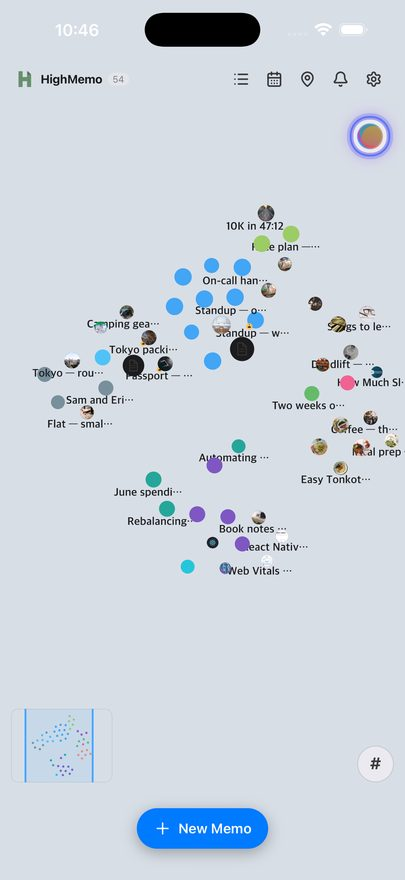
HighMemo opens onto the graph rather than a list. The number next to the HighMemo name is how many memos you have.
The toolbar, left to right
| Icon | Opens |
|---|---|
| List | The memo list, with search and filters — section 5 |
| Calendar | The month view with your reminders and, if connected, your events — section 12 |
| Map pin | The map of memos that have a place attached |
| Bell | The notification list: reminders that have fired and ones still scheduled |
| Gear | Settings — section 16 |
Elsewhere on the screen
- New Memo at the bottom opens the composer.
- The circular button at the top right is the AI Assistant. Its ring also doubles as a status indicator while a model is downloading or a memo is being processed.
- The small map at the bottom left is an overview of the whole graph; the visible area is outlined. Drag inside it to move around.
- The
#button at the bottom right toggles the tag names on and off.
3. Writing a memo #
Tap New Memo. The composer opens as a sheet from the bottom, with a title field and a body field. The body accepts Markdown — its placeholder says so: Supports Markdown. **bold**, *italic*, ## heading…
Tap Save to store it. Saving does not wait for anything: the memo is on your device the moment you tap Save, and any AI work happens afterwards in the background. If that work fails, nothing you already wrote is changed.
The formatting bar
A single row of buttons above the editor, scrollable sideways: B, I, S (strikethrough), inline code, H1 H2 H3, bullet list, numbered list, task list, quote, code block, divider, Date (inserts today, formatted for your region), link, and image.
Pinned at the right-hand end is a Preview / Edit toggle. Preview shows the Markdown rendered; Edit takes you back to the raw text. On iPhone and iPad you edit the raw Markdown and check it with Preview.
The composer's buttons
| Control | What it does |
|---|---|
| Calendar icon, in the header | Stamps today's date into the title. Only when creating, not when editing. |
| Expand / collapse, in the header | Grows the composer to fill the screen. |
| Image icon | Picks photos from your library, several at once. iOS asks for photo access the first time; if you refuse, the picker cannot open. |
| Document icon | Picks files to attach. |
| Microphone icon | Dictates into the body. Tap once to start, again to stop; the icon turns red and a waveform animates while it listens. iOS asks for microphone and speech-recognition access the first time. |
| Bell icon | Sets a reminder. Appears when you are editing a memo that already exists — on a brand-new memo, save it first and use the clock icon in its detail view. |
| Amber clock icon | Appears only when an unsaved draft was left behind. Restores it. |
| Cancel / Save | Save is greyed out until there is text or an attachment. |
Drafts
An unfinished new memo is kept for you: after a few seconds without typing, Draft saved appears. Close the composer and the amber clock icon brings it back next time.
Attachments
Attached images and files appear as thumbnails above the composer's footer. Tap a thumbnail to insert a reference to it inline in the body; tap the small × on it to remove it before saving. Files show their extension on the icon.
When you attach a photo, HighMemo reads what it can from the picture itself: the date it was taken, the camera and lens, and — if the photo carries GPS coordinates — the place, whose name is looked up so it can be shown to you. Text inside the image is read too, using iOS's own text recognition, and becomes material for the memo's tags and summary.
Mentioning another memo or a person
Type @ in the body and a row of suggestions appears under the editor: people you have mentioned before, your memos, and — if the calendar is connected — your events. Pick one and it becomes a link inside the text.
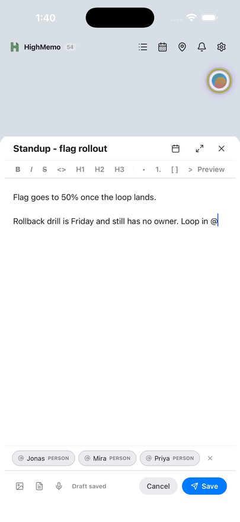
@ while you write and the people you have mentioned before come up.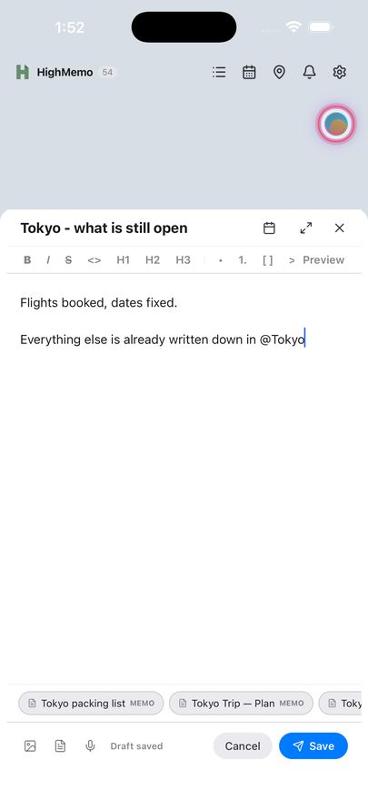
@ finds your own memos — type a name and pick the one you mean.A memo you mention this way is linked to the one you are writing, and that link is permanent in one direction that matters: deleting the mention from the text does not delete the link, and no automatic rebuild ever removes it. Only you can.
A person works the other way round. There, the text is the record: take @Priya out of the body and Priya is no longer linked to that memo. Memo links outlive their mention; people links do not.
Dictation was corrected just before this release so that it follows your device's language instead of a fixed one. If dictation transcribes into the wrong language on your device, that is worth reporting to highgarden0@gmail.com.
4. Sending things in from other apps #
HighMemo installs a share extension. In Safari, Photos, Mail or anything else with a Share button, tap Share and choose HighMemo. Text, links and images are accepted.
A shared link is saved first and read afterwards, so it lands even on a bad connection. Once the page has been fetched, the memo fills in with the page's own title, the page's description as the summary, and its preview image as a thumbnail. Pages that do not publish those details still become a memo — the title is then derived from the page's own content and there is no thumbnail.
Pages whose content is inside pictures
On iPhone and Mac, HighMemo reads the text in a link's images using the system text recognition, and uses it to write the tags, title and summary. Those images are never added to your memo and never uploaded. A copy fetched for reading is deleted after it is read, and anything left by an interrupted read is cleared the next time you open the app.
The recognised text is not stored either. What stays on the memo is what was written from it — the tags, the title and the summary — and if you have turned sync on, those travel to your Drive with the rest of the memo.
This is not the same on every platform, so it is worth knowing which one you are on:
| Text inside a link's pictures | How | |
|---|---|---|
| iPhone and iPad | read | iOS's own text recognition. Nothing to set up. |
| Mac | read | macOS's own text recognition. Nothing to set up. |
| Android | not read | HighMemo has no text-recognition engine on Android — see the Android guide, section 3. |
Sharing brings HighMemo to the front and opens the new memo, so you can see it landed; it is not a silent background hand-off. Sharing photos with no text alongside them produces a memo whose body notes how many you sent, ready for you to type over.
Shared text that happens to be a link is treated as one: HighMemo recognises it and fetches the page.
5. The memo list, search and filters #
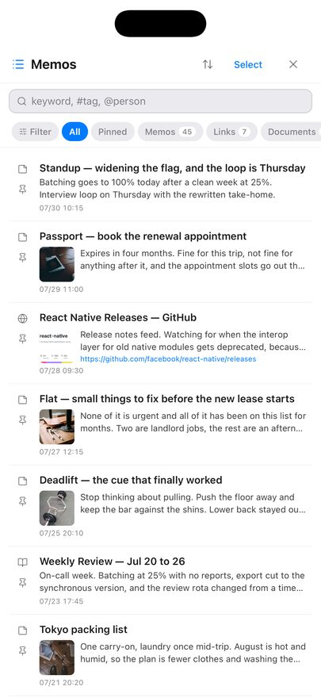
Search
The field's placeholder is its syntax: keyword, #tag, @person.
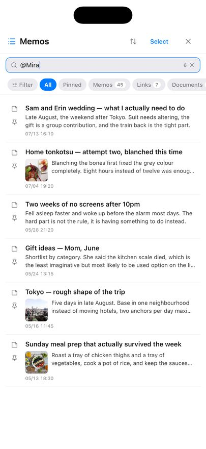
| You type | You get |
|---|---|
| Plain words | Memos whose title, body or tags contain what you typed, anywhere inside them. Case does not matter. |
#tag | Only memos carrying exactly that tag. Not a partial match — the whole tag name. |
@name | Only memos linked to exactly that person. Someone's name written in a body but not mentioned with @ will not match. |
The button on the left of the field switches between the two modes; in tag mode the placeholder becomes #tag name. Typing a # first switches for you.
Every memo is searched, not just recent ones. Once the on-device search model is ready, meaning-based matches are added to these results — nothing is taken away, so a search never gets worse for having the model. Without the model you get exactly the keyword results. Meaning-based matching applies to plain words only, not to #tag or @name, which are meant to be exact.
Type chips
All, Pinned, Memos, Links, Documents and Reminders — each with a live count. Tap one to narrow the list. Below them, chips for the tags you use most, so a topic is one tap away.
The Filter sheet
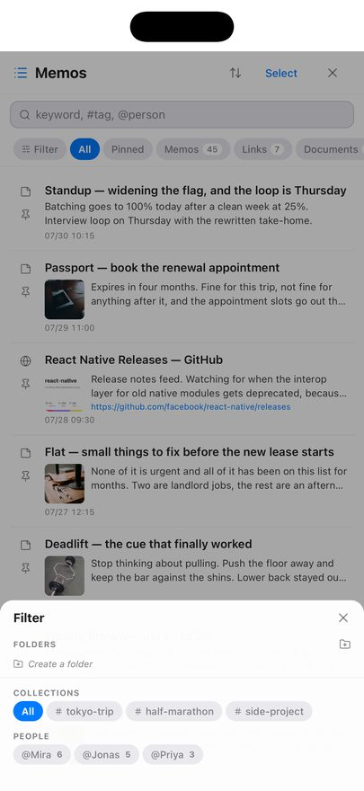
Sorting
The up/down arrows next to the title offer Pinned First (the default), Newest and Updated. The icon is tinted while you are on anything but the default, so you can see at a glance that a sort is in force.
Selecting several memos
Tap Select. Then tap memos to tick them. A bar appears at the bottom with:
- Delete — removes the ticked memos.
- Create Document — combines them into a new document. See section 9.
Deleting one memo
Swipe a row to the left and a delete action appears. It asks for confirmation.
Pinning
Each row has a pin toggle on its left. Pinned memos are collected under the Pinned chip.
What a row tells you
The title, two lines of the summary, and the date. Link memos show the site's icon and its address; memos with a picture show a thumbnail. A memo the AI is still working on shows a spinner and AI processing….
The ad row
An ad appears as a row in this list, about once every twenty memos. It is labelled as sponsored. Ad requests carry no part of your memos.
6. Opening a memo #
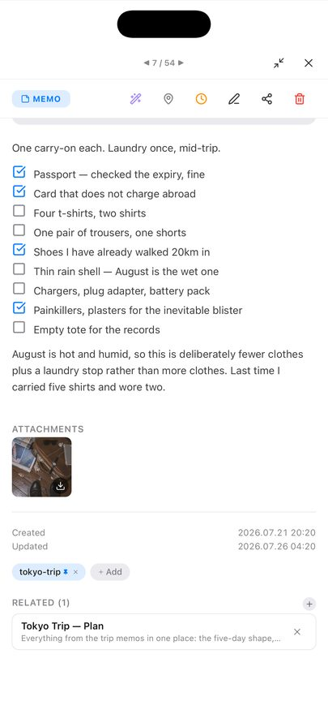
Tap a memo — in the list or on the graph — to open it. The arrows at the top step through your memos in order; the number between them is your position.
The action row
| Icon | What it does |
|---|---|
| Wand (purple) | Runs the AI over this memo again — a new title, summary, tags and category. Needs an AI provider. If it fails, your existing title, summary and tags are kept. |
| Map pin | Attaches or changes a place, and with it a location reminder — section 11. |
| Clock (amber) | Attaches or changes a time reminder. |
| Pencil | Edits the memo. |
| Share | Sends the memo out through the iOS share sheet. |
| Trash (red) | Deletes the memo. |
The sections down the page
- Folder chip — which folder the memo is in, or None. Tap to move it.
- Reminder chip — shown when a reminder is set, with its date and time.
- Summary — written by the AI. Absent until an AI provider has processed the memo.
- The body — rendered Markdown. Checklists are tappable.
- Attachments — images and files on the memo.
- Created / Updated — timestamps.
- Tags — chips, plus + Add to add one by hand.
- Related — the memos you linked, including anything you brought in with
@. The + beside the heading links more. The × on a row unlinks it. On a document this section is called Sources, and those are the memos the AI reads when it writes the document. - Recommend — memos that look similar. This list comes from the on-device search model, so it is empty until that model is ready. Nothing here is linked to your memo; it is a suggestion you can tap.
- Auto-collect related memos — on a document only. Leave it on and HighMemo offers to add newly written memos that look related to it.
Editing in place
Tap the title to correct it without opening the editor. Double-tap the body to open the editor. Tapping a link in the body follows the link rather than opening the editor, and ticking a checkbox just ticks it.
AI actions on one memo
The small circular button at the end of the title row opens five actions. Each needs an AI provider.
| Action | What it does |
|---|---|
| Ask AI | Opens the assistant with this memo as its subject. |
| Enhance | Rewrites and tidies the memo's text. |
| Summarize | Produces a shorter version. |
| Translate | Translates it into your AI Language. |
| Action items | Pulls out the things to do as a checklist. |
Attachments and the image viewer
Images and files sit in their own section. Tap an image to open it full screen — pinch to zoom, double-tap to zoom, swipe sideways between images. The viewer has Download to save to your photo library and a share button. Tap a file to save it; long-press anything to save it.
7. Tags, folders, pinning and people #
All four work with no account and no AI.
Tags
Tags arrive two ways: the AI adds them when it processes a memo, and you add them yourself with + Add in the detail view. A tag is identified by its name, so a tag you type by hand and a tag the AI produced with the same word are the same tag — they cannot be duplicated.
To rename or delete tags in bulk, open Settings → Data & Storage → Tag Manager. It has a search field, a memo count per tag, and a multi-select delete. Deleting there also removes the tag from every memo that carried it.
Collections
Collections in the Filter sheet is your shortlist of tags. It starts empty, with the hint Long-press a tag to pin it here — do that on any tag chip in a memo and it joins the list. Long-press it in Collections to take it out again.
Folders
Create folders in the Filter sheet under Folders, with Create a folder or the folder-plus icon. Long-press a folder to Rename or Delete it. Move a memo by tapping its folder chip in the detail view, where New folder also makes one on the spot.
A memo lives in one folder at a time, and folders do not nest.
People
Typing @ and creating a new name makes that person available everywhere. People appear as their own axis in the Filter sheet with a count each, and @name in the search box matches them exactly.
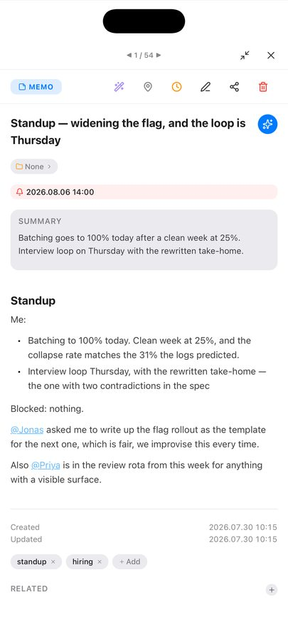
@ and every memo they are in is one tap away.8. The graph view #
Each dot is a memo. Memos that share a tag gather together, and the tag's name sits at the centre of the group. That grouping needs no AI, no account and no model — tags are enough. Memos that share no tag with anything collect under Uncategorized.
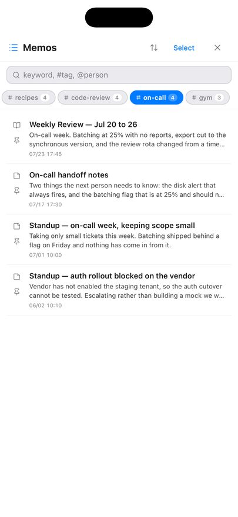
The graph draws no lines between memos on iPhone or iPad. With thousands of memos there would be tens of thousands of lines and the view would stop being usable, so the app shows relatedness as grouping instead. To see what a particular memo is connected to, open it and read Related (the links you made) and Recommend (similar memos) — section 6.
Gestures
- Drag to move, pinch to zoom, and flick to keep gliding.
- Double-tap to step the zoom: in, in again, then out to fit everything. The point you tapped stays put.
- Tap a dot to open that memo on top of the graph.
- Tap a tag name to filter to that group and zoom to it. A pill appears at the top showing the tag; its × clears the filter.
- Use the overview map at the bottom left to jump somewhere far away.
- The
#button switches between seeing tag groups and seeing individual memos.
What you see as you zoom
Zoomed out you see tag names, not memos — the busiest groups first, then more of them as you zoom in. Past a certain point the tag names give way to the memos themselves, then to their titles, then to their thumbnails. Exactly one of the two — groups or memos — is on screen at a time, so the view never becomes a mess of both.
Dot colour follows the memo's category. A dashed pulsing ring around a dot means the AI has not finished with it yet.
With no memos yet, the graph says Add a memo to get started.
9. Documents #
A document is a memo written from other memos. Requires an AI provider.
- Open the memo list and tap Select.
- Tick the memos you want to draw from.
- Tap Create Document.
- The sheet asks What kind of document should these memos become? Type what you want — the placeholder suggests e.g. Weekly summary, Meeting notes… — and tap Create.
What you type here decides the shape of the result, not just its title: ask for a weekly report and you get one organised by date; ask for a comparison and you get a table. The memos you ticked become the document's Sources, listed in its detail view. Add or remove a source there and regenerate to rewrite it.
Documents show under the Documents chip in the memo list and carry a book icon.
Adding more memos later
Open the document and tap + beside Sources. The memo list reopens in a picking mode — search, folders and collections all still work, and memos already used are left out. Tick what you want and confirm with Add n to document. The document is then rewritten with the new sources included.
If you have edited the document by hand, HighMemo warns you first: regenerating may overwrite your edits.
Letting a document collect its own sources
In a document's detail view, Auto-collect related memos. With it on, when you write a memo that looks related HighMemo raises a small banner — Add to "…"? with an Add button. Nothing is added unless you tap it.
Without an AI provider
You can still make a document. It will be your chosen memos gathered under headings, in order — a tidy collection rather than a piece of writing. Connect an AI provider and regenerate to turn it into one.
10. AI Assistant #
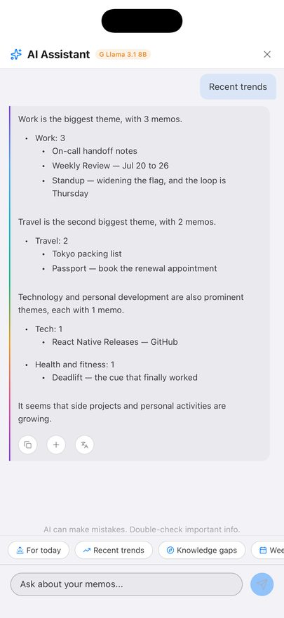
Open it with the circular button at the top right of the graph. It answers from your own memos. It needs an AI provider connected — with Text Rules Only selected, tapping it takes you to Settings instead, with the message Set up AI in Settings.
Type into Ask about your memos…, or tap a preset. The presets change depending on whether a memo is in context:
| With no memo in context | With a memo in context |
|---|---|
| For today — what your day looks like against your memos | About this memo |
| Recent trends — the last two weeks | Find related |
| Knowledge gaps — the last month | Enhance |
| Weekly summary — the last seven days | Action items |
| Random connection — three memos at random, held up against each other |
Reading an answer
Memos the answer drew on appear as chips you can tap to open, and tags as chips that open the list filtered to them. Under each answer:
- Copy
- Save as Memo — keeps the answer as a new memo
- Append to memo — adds it to the memo in context; checklists arrive as real checkboxes
- Translate — into your AI Language
While an answer is streaming, the send button becomes a stop button. If a model you chose can read images, an attach button appears in the input row and you can send up to three.
The panel carries the line AI can make mistakes. Double-check important info. That applies here as anywhere: the assistant summarises your memos, it does not verify them.
If Google Calendar is connected, the titles of today's and tomorrow's events are included in what the assistant is told, so it can answer about your day. That means those titles go to whichever AI provider you configured.
11. Reminders #
Reminders work with nothing connected. iOS asks for notification permission the first time.
Time reminders
Open a memo and tap the clock icon. A sheet titled Reminder offers, in order:
- In 1 hour · In 3 hours · Tomorrow morning · Next Monday — each showing the date and time it works out to
- Custom… — pick a date, then a time
- Repeat — pick a time and one of No repeat, Daily, Weekly or Monthly
- Clear reminder — removes it
Those four repeat settings are the whole set. Weekly repeats on the weekday of the date you picked, and monthly on that day of the month.
A memo with a reminder shows it as a chip in its detail view, appears in the calendar on that day, and is listed under the Reminders chip in the memo list.
Location reminders
Open a memo and tap the map pin. A full-screen map opens. Search for a place with Search place… or tap the map to drop the pin; the pins of your other location memos show as dots so you can see what is already nearby. Set the Radius with the stepper — 100 m to 2 km, in 50 m steps, starting at 300 m — then tap Set Reminder.
When you arrive, the memo comes back. It fires once per visit: staying inside the area does not repeat it, and it re-arms when you leave. Setting one while you are already inside the area does not fire it immediately — you have to leave and come back.
Arrival is decided by your device, and the notification is created on your device too.
The map pin in the top toolbar opens Location Reminders — every memo that has a place, on one map. With none set it tells you so and points you at the pin icon inside a memo.
iOS asks for location access when you first attach a place. For a reminder to fire when HighMemo is not open, it also needs Always location access — you may be asked again later, or you can set it in iOS Settings → Privacy & Security → Location Services → HighMemo. With only While Using the App, arrival reminders will not reach you reliably. There is no location setting inside HighMemo; permission is requested at the map, per memo.
The notification list
The bell in the toolbar collects four things in one list: reminders that have fired, arrivals at a place, reminders still to come, and problems worth telling you about (a sync failure, an AI provider error, an expired sign-in). Some of those are tappable and take you to the setting that fixes them.
- The badge on the bell counts unread items. Opening the list does not mark everything read — Read all does.
- Done on a reminder row marks it dealt with.
- Swipe a system message to the left to remove it.
12. Calendar #
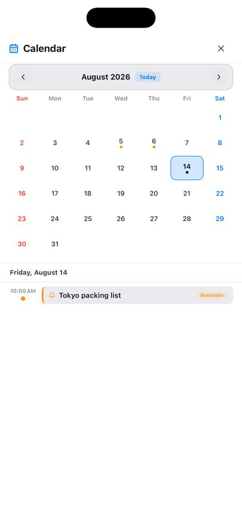
The calendar icon in the toolbar opens a month grid. Days with something on them carry a dot; tap a day to see it below, or swipe sideways to change month. Today jumps back. Your own memo reminders show here whether or not you connect anything, marked with a bell and a Reminder badge; tapping one opens the memo.
Connecting Google Calendar
Go to Settings → Sync & Services, connect Google (see section 15), then use Connect Calendar. Your calendars appear grouped by account, each with a checkbox — untick the ones you do not want to see. Add Calendar Account adds a second Google account for calendar only.
Access is read-only. HighMemo never creates, edits or deletes an event. Events cover about a month back and three months ahead, refresh about every 30 minutes while the app is open, and you can force it with Sync Now.
Swiping sideways is not stopped at the edges of the fetched window, so you can keep going into months HighMemo has not asked Google about. Those months show nothing — which looks exactly like a month with nothing in it. If a month more than three ahead, or more than one behind, comes up blank, that is the window rather than your calendar. Your own memo reminders are not affected; they are stored on the device and show in any month.
There is also a ceiling of 2,500 events per fetch. Inside a four-month window you are unlikely ever to meet it.
Google events and your reminders are merged into one timeline for the day, in time order. An event shows its title, start and end, and its location; all-day events are marked as such.
Events and memos together
- Add memo, under an event, starts a memo already attached to it. You do not have to expand the row first — the button is there on every Google event, with any memos already linked to it as chips just above.
- When you save a memo, HighMemo suggests an event that looks related — a small banner reading Link to "…"? with a Link button. Nothing is linked unless you tap it.
- A memo's linked events appear in its detail view, where you can add more or unlink one.
You can only see events; there is no way to create, change or delete one from HighMemo, by design.
13. Setting up AI #
Three routes, and you can also take none. Whichever you pick, HighMemo has no server in the middle and no AI of its own.
Route 1 — a cloud provider, with your own key
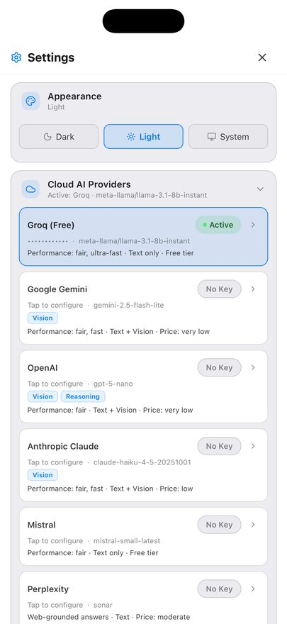
Open Settings → Cloud AI Providers, tap a provider, and paste the API key of an account you already have. Get API key → takes you to the right page if you do not. Saving a key selects that provider and its default model; Change under MODEL picks a different one.
| Provider | Default model |
|---|---|
| Groq (Free) | Llama 3.1 8B Instant |
| Google Gemini | Gemini 2.5 Flash Lite |
| OpenAI | GPT-5 nano |
| Anthropic Claude | Claude Haiku 4.5 |
| Mistral | Mistral Small |
| Perplexity | Sonar |
| Alibaba Qwen | Qwen Plus |
Requests go from your device straight to the provider you chose, under your key. Your key is stored on your device and is not included in anything HighMemo syncs. What you send is subject to that provider's own terms — the privacy policy lists them.
Route 2 — a model that runs on the device
Under Settings → Local AI, On-device Models lists models you can download and run locally. No account, no key. Download one — sizes run from 0.8 GB to 2.5 GB, so use Wi-Fi; HighMemo warns you if you are on cellular — then tap Ready to activate it. The badge becomes Active.
| Model | Download | Notes |
|---|---|---|
| Gemma 3 1B | 0.8 GB | Lightest |
| Qwen3 1.7B | 1.1 GB | Recommended |
| Qwen3.5 2B | 1.3 GB | |
| Kanana 1.5 2.1B | 1.5 GB | Korean-tuned |
| Phi-4-mini 3.8B | 2.5 GB | Heaviest text model |
| Gemma 4 E2B | 2.2 GB |
With one of these active, your memo text is processed on the device and does not leave it, and it works with no internet connection. Other things still use the network — ads, and syncing if you turned it on.
The trash icon on a downloaded model frees its space. Reload on the active model reloads it if it has stopped responding.
On any platform the on-device chat model is hidden if a first-run speed check finds it too slow. Semantic search keeps running on the device in those cases. Only on devices with very little memory (under about 4.5 GB) is on-device embedding switched off as well.
Where it is hidden you get a card reading On-device chat AI is off on this device, pointing you at a cloud provider instead. This is a deliberate guard against crashing, not a fault. The card's own wording talks about memory even when the reason was the speed check.
Route 3 — Apple Intelligence
On iPhones and iPads that support it, Apple Intelligence appears at the top of the on-device model list, marked Built-in. There is nothing to download. If the row shows:
- Turn On — Apple Intelligence is off in iOS. HighMemo offers to open the Settings app; switch it on under Apple Intelligence & Siri and come back.
- Downloading — iOS is still fetching Apple's model in the background. Wait.
- Unavailable — it cannot be used right now, with the reason shown.
If your device does not support Apple Intelligence at all, the row is not shown. Use Refresh Models after changing anything in iOS Settings.
Route 4 — no AI
Settings → Local AI → Text Rules Only (no AI) turns AI off entirely. Memos still get a title and short summary derived from their own text by a plain rule, with no model involved. This is also what happens before you configure anything.
What the AI produces
Once a provider is connected, every memo you save comes back — a few seconds later, in the background — with a title, a summary, tags and a category. The category is what colours the memo's dot on the graph.
The AI is asked to pick a category. The value is stored as it comes back, and the graph has colours for 15 of them — anything else takes a default colour. That is why an occasional dot is grey while its neighbours are not.
The categories with no colour of their own are kids, camping, fashion, pet, art and other.
If the AI fails or you are offline, your memo is untouched: existing titles, summaries and tags are kept rather than replaced.
What language the AI writes in
Settings → Display → AI Language sets it. Auto is the default and follows the memo. Fourteen languages can be chosen explicitly: English, 한국어, 日本語, 中文, Español, Français, Deutsch, Português, Tiếng Việt, ไทย, Indonesia, العربية, Русский, हिन्दी. This setting affects AI output only — the interface stays in English.
14. The on-device search model #
Separate from everything in section 13, and much smaller. This model turns your memos into vectors so HighMemo can find things by meaning rather than by matching letters. It powers meaning-based search results and the Recommend list. It always runs on your device, whichever AI provider you use, and the vectors it produces are not sent anywhere.
The first-launch question
On the very first launch a dialog titled Improve search quality? offers the download — about 330 MB, Wi-Fi recommended — with Download and Not now.
- Download — it downloads in the background. The ring around the AI button shows progress. The app stays usable throughout.
- Not now — HighMemo does not download it, and remembers that answer. You will not be asked again, and it will not be fetched quietly later.
Getting it later, or checking on it
Go to Settings → Local AI → Semantic Search Model. The Embedding Model row says which state it is in — Ready — semantic search enabled, Downloading… n%, or Not downloaded — using keyword search — and offers a Download button when it is missing. Pressing that button is also what clears an earlier "Not now".
There is no on/off switch for meaning-based search. It works when the model is ready and does not when it is not.
One kind of device never gets it: where there is very little memory — under about 4.5 GB — this model is switched off along with the chat models of section 13, so the first-launch question does not appear and search matches letters. A device held back only by the speed check does run it.
The semantic index
Below it, Semantic Index reports how many memos have been indexed. Indexing happens on its own after the model is ready, but you can drive it:
- Index n or Build — process the memos that are not indexed yet.
- Rebuild — start over and re-index everything.
- Stop — halt a run in progress.
These are greyed out until the model is ready. Until a memo is indexed, it is still found by keyword — it just will not appear in meaning-based results.
15. Sync with your Google Drive #
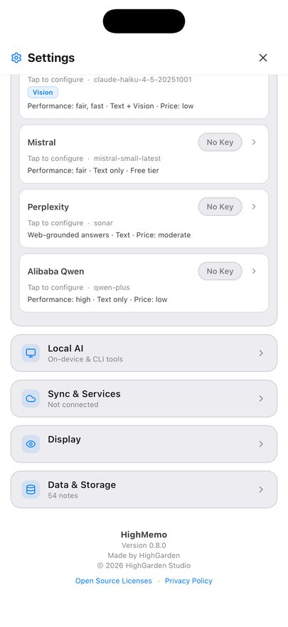
Connect a Google account and your iPhone, iPad and Mac see the same memos. They are stored in your own Google Drive app-data folder — a private per-app area of your Drive. There is no HighMemo server and no HighMemo account, so nobody at HighMemo can look at them. Images and attachments travel too.
Turning it on
- Settings → Sync & Services → Cloud Sync and choose Google.
- Tap Connect Google and sign in.
Connecting sync requests app-data folder access and read-only calendar access in the same consent screen. There is no way to grant only one. If you want sync but not the calendar, simply do not connect the calendar afterwards — HighMemo will not read your events until you do.
When it runs
When you open the app, and every 5 minutes while it is open. Sync Now runs it immediately. There is no background sync while the app is closed, and no interval to configure — the card shows Status and Last sync so you can see where it stands.
That 5-minute cycle exists only while Drive sync is actually set up and signed in. If it is not — no provider chosen, or the sign-in has expired — there is no slow sync going on in the background: nothing is scheduled at all. So a stale Last sync is worth reading as "check that it is still connected" rather than "wait longer".
Turning it off, and deleting what was uploaded
Disconnect stops all uploads and signs the account out. That does not delete the copy already in your Drive. To remove that, revoke HighMemo in your Google Account permissions — which deletes the app-data folder.
If sync starts failing
A stale sign-in shows as an error and a message that the token expired. Disconnect and Connect Google again.
16. Settings reference #
The gear icon in the toolbar. Sections in the order they appear.
Appearance
Dark / Light / System.
Cloud AI Providers
The seven providers, their keys and models — section 13.
Local AI
- Semantic Search Model — the search model and the semantic index (section 14).
- On-device Models — download and activate a local model, including Apple Intelligence (section 13). Hidden on devices that cannot run one.
- Refresh Models — re-checks what is installed and re-checks Apple Intelligence.
- Text Rules Only (no AI) — no model at all.
Sync & Services
- Cloud Sync — None or Google, then the Drive card with Sync Now and Disconnect (section 15).
- Calendar (read-only) — appears once Google is connected. Per-calendar checkboxes, Add Calendar Account, Sync Now, Disconnect All (section 12).
Display
AI Language — the language the AI writes titles, tags, summaries and answers in. Default Auto.
Data & Storage
- Total Memos and Storage Estimate — read-only.
- Tag Manager — search, select and delete tags in bulk.
- Export data / Import data / Reset All Data — section 17.
About
Version number, Open Source Licenses (searchable), and a link to this site's privacy policy.
- No sync passphrase. There is no encryption control in the app.
- No switch for meaning-based search. It follows the model's state.
- No ad settings. There is no paid or ad-free version.
- No location section. Location permission is asked for at the map, per memo.
- No sync interval. Sync runs on open and every 5 minutes while open.
17. Export, import and reset #
Export
Settings → Data & Storage → Export data writes a single JSON file named HighMemo-backup-date-time.json and opens the iOS share sheet so you can put it wherever you like. It contains memos, tags, folders, links and your attached photos embedded in the file itself.
One exception worth knowing: thumbnails that came from a shared web page are stored as the web address they came from, so they are references rather than embedded copies.
There is no Markdown or PDF export. JSON is the only format.
Import
Import data reads a backup file back in and merges it. Nothing is deleted by importing, and re-importing the same file does not create duplicates.
Reset All Data
Deletes every memo, tag, folder and link, on this device and in your Drive copy including uploaded images. It asks for confirmation first. It deliberately keeps your settings, API keys, Google connection, language and appearance — it clears content, not configuration.
18. Permissions and what leaves the device #
| iOS asks for | When | If you refuse |
|---|---|---|
| Photos | First time you attach a photo | The picker cannot open. Everything else works. |
| Microphone & Speech Recognition | First time you use dictation | Dictation is unavailable. Typing is unaffected. |
| Notifications | First time you set a reminder | Reminders will not reach you. |
| Location | First time you attach a place to a memo | Location reminders cannot fire. Nothing else changes. |
| Tracking (App Tracking Transparency) | Shortly after first launch, for ads | Ads still appear; iOS withholds the advertising identifier. |
The short version of what goes out, with nothing connected: ad requests, and — if a photo you attach carries GPS coordinates in its metadata — a lookup of those coordinates against OpenStreetMap's naming service so the place can be named. Everything else is on your device until you connect something.
The full account, including what each AI provider receives, is in the privacy policy.
19. Troubleshooting #
| What you see | Why, and what to do |
|---|---|
| Memos have no summary, tags or category | No AI provider is connected. Section 13. Existing memos get them when you tap the wand icon in the detail view. |
| Recommend is always empty | The on-device search model is not ready. Check Settings → Local AI → Semantic Search Model. Related is separate and only ever holds links you made yourself. |
| Search misses something you know you wrote | Plain keyword search matches the letters you type. Try a word that is literally in the memo, or wait for the search model to finish indexing. |
| The graph shows no lines | By design on iPhone and iPad. Section 8. |
| The on-device model list is missing | Either the first-run speed check found this device too slow, or it has very little memory. Use a cloud provider, or Apple Intelligence if your device supports it — section 13. |
| Apple Intelligence is not in the list | Your device does not support it. If it does but is switched off, the row appears reading Turn On. |
| A location reminder never fires | Location is probably set to While Using the App. Arrival reminders need Always. See section 11. |
| Sync says the token expired | Disconnect then Connect Google again. |
| Your Mac and iPhone disagree | Sync runs on open and every 5 minutes while open. Tap Sync Now on both. |
| A memo shows a dashed ring on the graph | The AI has not finished with it. It goes away by itself. |
| The 330 MB download never started | You chose Not now, which is remembered. Press Download under Settings → Local AI → Semantic Search Model. |
Anything else: highgarden0@gmail.com.